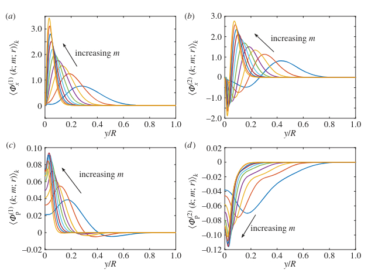
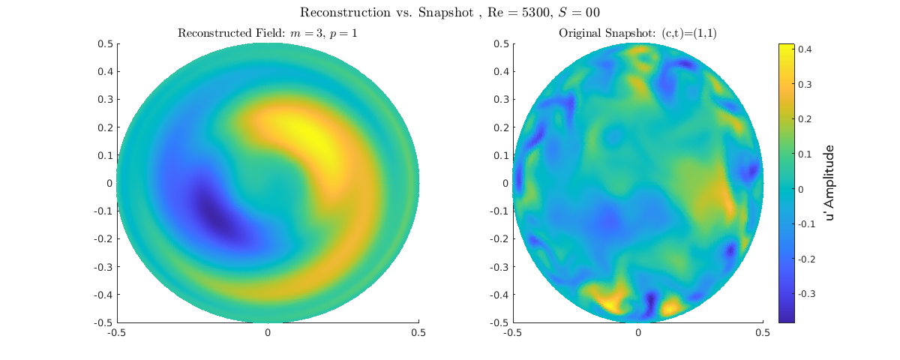
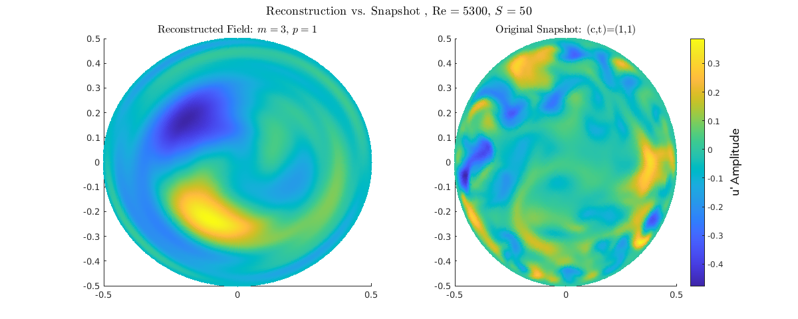
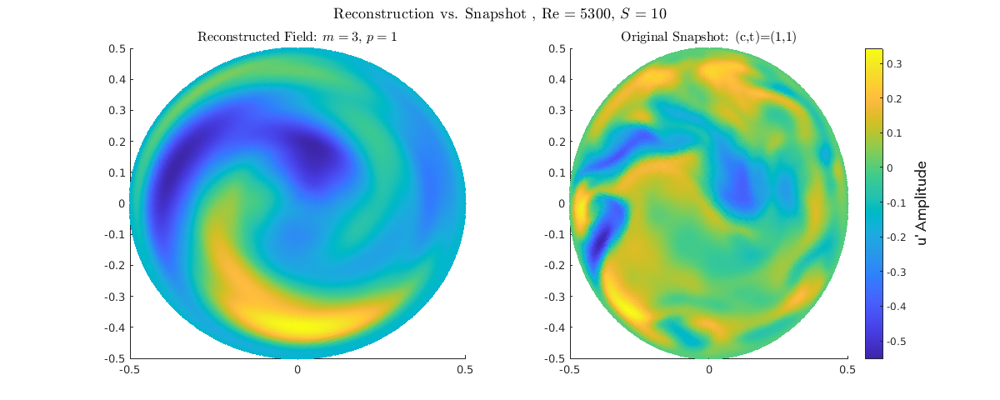
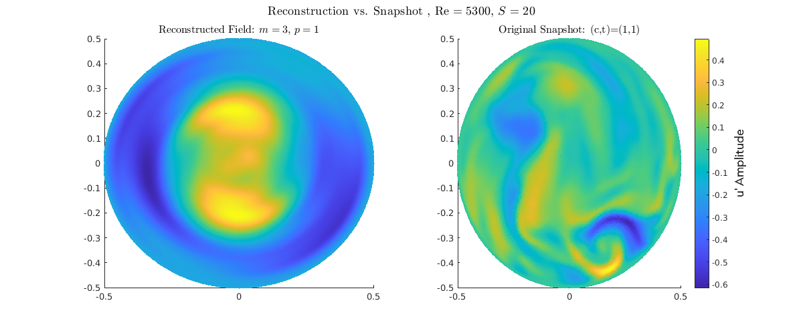
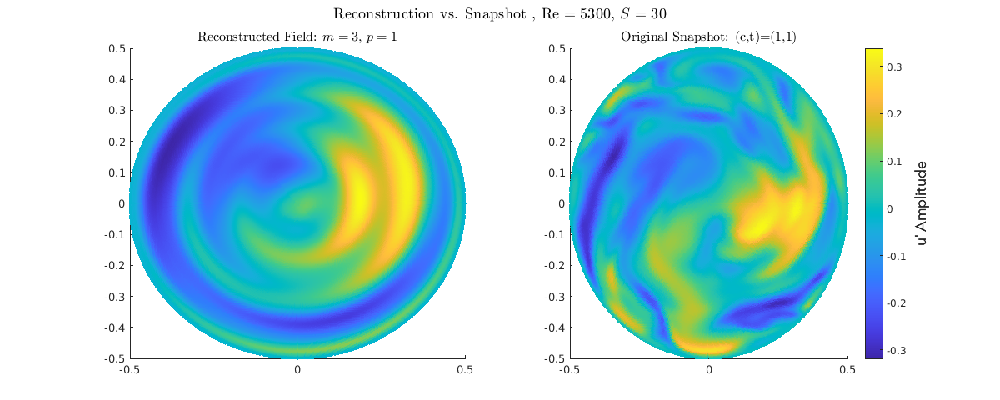

POD Analysis of Turbulent Pipe Flow and Relaminarization
Michael Raba, MSc Candidate Department of Mechanical Engineering, University of Kentucky Fall 2025
Created: 2025-12-01 Mon 06:55
Abstract
- Flow in a circular pipe rotating about its axis at low Reynolds number is investigated.
- The simulation is performed by spectral finite element package Nek5000, a high fidelity DNS simulation, fifth order accurate in space and second order accurate in time.
- A non uniform grid in the radial direction yields accurate solutions with a reasonable number of grid points.
- Numerical Method has been tested by previous authors Davis 2017 et al.
- When the pipe rotates, Fatica 1997 showed a degree of drag reduction is achieved in numerical simulation for low rotation numbers
- Through a ROM (reduced order method) FFT-POD, which decomposes the velocity field \(u_{\theta}, u_r, u_x\) into ordered energy modes, show large scale motions (LSM) leading the transport or vorticity away from the pipe wall.
Background
Introduction to Axially Rotating Pipe Flow
- Flow configuration: The axis of rotation is parallel to the mean flow direction.
- Laminar flow behavior:
- The axial mean flow is not directly affected by rotation.
- The axial velocity profile remains the laminar parabolic profile (Poiseuille flow): \(u_z(r) = U_{\text{max}}\left(1 - \frac{r^2}{R^2}\right)\)
Reynolds Number \(Re\) and Swirl Rate \(N\)
- Definition: \(Re = \frac{U D}{\nu}\)
- Based on mean bulk velocity \(U\), pipe diameter \(D\), and kinematic viscosity \(\nu\).
- Rotation Number / Swirl Rate (\(N\))
- Definition: \(N = \frac{V_w}{U}\) swirl rate in this study: \(S=0,0.5,1,2,3\). These numbers were done before eg (Fatica 1997).
- Characterizes the angular velocity \(\Omega\) through the azimuthal velocity of the pipe inner wall: \(V_\theta(r = R) = \frac{\Omega D}{2}\)
Laminar vs. Turbulent Flow Behavior
- Initially laminar flow can be destabilized by rotation.
- Initially turbulent flow can be seemingly relaminarized for sufficiently large \(N\).
- Turbulence suppression is observed as a reduction in turbulence intensity and mixing length, related to the Richardson number \(Ri\).
Turbulence and Relaminarization
- Significance: Axially rotating pipe flow is a prototypical case to study relaminarization mechanisms.
- Centrifugal and near-wall effects:
- Modifications of near-wall flow structures contribute to relaminarization.
- Centrifugal forces influence mean flow and turbulence dynamics.
- Numerical methods:
- RANS and wall-resolved LES fail to capture the turbulence-suppression physics.
- DNS can effectively study rotation effects on turbulent structures.
- Research gap: Prior DNS studies were restricted to relatively low \(Re\) and \(N\); this work provides detailed DNS at larger \(Re\) and varying \(N\).
Key Experimental Findings
- White (1964): Up to \(40\%\) reduction in pressure loss at very high rotation numbers due to suppressed radial transport.
- Kikuyama et al. (1983): Initially turbulent flow can relaminarize at high \(N\), while initially laminar flow can destabilize.
- Imao et al. (1996): Reduced turbulence intensity with increasing rotation rate; verified relation between reduced mixing length and \(Ri\).
- Facciolo et al. (2007): Mean velocity distributions agree with Lie-group scaling laws (Oberlack 1999, 2001).
Numerical Simulation Results (Prior Studies)
- Scope: Few numerical studies compared to spanwise rotating channel flow.
- DNS prior studies: \(Re \le 7400\), typically low \(N\), observed partial turbulence suppression but not full relaminarization.
- Orlandi & Fatica (1997): DNS up to \(N = 2\) (later \(N = 10\)) at \(Re = 4900\); mean streamwise velocity approached laminar Poiseuille profile.
- Feiz et al. (2005): DNS at \(Re = 4900\) and \(Re = 7400\); LES at \(Re = 20,000\) showed stronger skin-friction reduction with increasing \(N\) at higher \(Re\).
- Observations:
- Tangential velocity profiles are similar across \(Re\).
- Differences between experimental and DNS data partially due to flow condition uncertainties and measurement locations.
DNS of Rotating Turbulent Flow
Setup
- The study investigated physical phenomena in a rotating turbulent flow using Direct Numerical Simulation (DNS) at three Reynolds numbers (\(\text{Re}\)): 5,300, 11,700.
- Simulations assumed fully-developed turbulent flow and employed periodic boundaries in the streamwise direction.
- The incompressible Navier-Stokes equations are solved in a reference frame rotating with the pipe walls.
- Centrifugal and Coriolis forces were included as source terms.
- Sufficient temporal and spatial resolution was crucial for accurately studying the intricate nature of turbulence.
- The computational meshes ensured the wide range of turbulent scales are well resolved, with grid spacing close to \(\Delta y^+ = 1\).
- Grid resolution and sizes (\(N_{\Delta x}\)) are provided in Table 1 (details below).
- Radial (\(\Delta r^+\)), azimuthal (\(\Delta R\Theta^+\)), and streamwise (\(\Delta z^+\)) grid spacings are reported in $y^+$-units.
- Different ranges for the grid spacings are provided because the mesh is non-uniform within the computational domain.
- To obtain fully-converged turbulent statistics, a total compute time of at least ten flow-through times was used (excluding the initial transient time).
Table 1: Simulation Details (Streamwise Extend of \(15D\))
| \(\text{Re}\) | $Δ r^+$/ $Δ RΘ^+$/ \(\Delta z^+\) | \(N_{\Delta x} \times 10^6\) |
| 5,300 | 0.14–4.4/1.5–4.5/3.0–9.9 | 20 |
| 11,700 | 0.16–4.7/1.5–5.0/3.0–9.9 | 120 |
| 19,000 | 0.15–4.5/1.5–4.8/3.0–10. | 440 |
—
Computational Implementation (Nek5000)
- The mesh is comprised of hexahedral elements.
- The solution is composed of $Nth$-order tensor product polynomials within each element.
- The use of local lexicographical ordering within each macro element, and only evaluating \(O(EN^4)\) discrete operators (which typically have \(O(EN^6)\) non-zeros), leads to cache and vectorization efficiency.
- The code (Nek5000) minimally uses external libraries to increase compile speed.
- Matrix operations are implemented in assembler code \(M \times M\) routines to speed up computations.
- Parallelism is automatically tuned for each machine by testing the three available parallel algorithms at the beginning of each run to determine the optimal one.
- The algebraic multi-grid solver was chosen from the different pressure Poisson solvers available in Nek5000 for this work.
DNS Mesh
Simulation Domain
- Circular pipe, D = 1, L = 12D
- Reynolds numbers: 5300, 12700
- Non-slip at walls, periodic at inlet/outlet
- Spectral element method: Legendre basis, order l = 6
Governing Equations
\begin{align} \nabla \cdot \boldsymbol{u} &= 0 \\ \frac{\partial \boldsymbol{u}}{\partial t}+ (\boldsymbol{u}\cdot\nabla)\boldsymbol{u} &= -\nabla p + \frac{1}{Re} \nabla^2 \boldsymbol{u} \end{align}Mesh Images
Non-uniform mesh (finer near walls)

Uniform, interpolated mesh for POD analysis
POD–FFT Procedure
ROM
Goal: Reduce an infinite-dimensional vector space problem in 3D with infinite degrees of freedom to a finite, small-scale linear algebra problem defined by the temporal correlation matrix (\(N_s\times N_s\)), which can be solved efficiently using linear algebra
POD Definition
The fundamental definition of the Proper Orthogonal Decomposition involves finding the basis functions (\(\hat{\boldsymbol{\phi}}_k\)) that maximize the energy projection, which is equivalent to solving the integral eigenvalue problem:
\[\text{Maximize}_{\hat{\boldsymbol{\phi}}} \quad \frac{\langle |\mathbf{u} \cdot \hat{\boldsymbol{\phi}}|^2 \rangle_R}{\langle \hat{\boldsymbol{\phi}}, \hat{\boldsymbol{\phi}} \rangle_R} \quad \implies \quad \int_0^R \mathbf{R}(r, r') \, \hat{\boldsymbol{\phi}}_{k}(r') \, r' \, dr' = \lambda_{k} \, \hat{\boldsymbol{\phi}}_{k}(r)\]
Where:
- \(\langle \cdot \rangle_R\) is the weighted (energy) inner product.
- \(\mathbf{R}(r, r')\) is the two-point correlation tensor of the flow field.
- \(\hat{\boldsymbol{\phi}}_{k}\) are the optimal spatial modes.
- \(\lambda_k\) is the energy (eigenvalue) associated with that mode
- We are searching for the single spatial structure \(\hat{\phi}\) that contains the maximum fraction of the total average flow energy , ensuring the structure is normalized so it has unit energy itself. The resulting function ϕ^ is the first POD mode, which is the most energetic coherent structure in the data set.
- This maximization problem is equivalent to the integral equation via calculus of variations Fredholm theory
- Turbulent data is statistical stationary (Elliptic problem)
Snapshot POD: Temporal Solution and Mode Construction
The Snapshot Proper Orthogonal Decomposition method solves two interconnected equations to find the optimal basis set.
- Temporal Eigenvalue Problem (Eq. 2.4)
The process begins by solving the temporal eigenvalue problem using the correlation tensor \(\mathbf{R}(t, t')\) (the discrete matrix \(K\) in implementation). The solution yields the eigenvalues (\(\lambda^{(n)}\)) and the raw temporal eigenvectors (\(\alpha^{(n)}\)):
\[\lim_{\tau \to \infty} \frac{1}{\tau} \int_0^\tau \mathbf{R}(k; m; t, t') \alpha^{(n)}(k; m; t') \, dt' = \lambda^{(n)}(k; m) \alpha^{(n)}(k; m; t) \tag{2.4}\]
- Spatial Mode Construction (Eq. 2.5)
The spatial modes (\(\mathbf{\Phi}_T^{(n)}\)) are then constructed by projecting the temporal eigenvectors back onto the snapshot matrix \(\mathbf{u}_T\) (which represents all flow snapshots):
\[\lim_{\tau \to \infty} \frac{1}{\tau} \int_0^\tau \mathbf{u}_T(k; m; r, t) \alpha^{(n)*}(k; m; t) \, dt = \mathbf{\Phi}_T^{(n)}(k; m; r) \lambda^{(n)}(k; m) \tag{2.5}\]
Necessity of Scaling for Flow Reconstruction
The final step for flow reconstruction is to obtain the physical time coefficient, \(b_k(t)\), from the eigenvector \(\alpha^{(n)}(t)\).
Equation (2.5) shows that the spatial mode \(\mathbf{\Phi}_T^{(n)}\) is multiplied by the eigenvalue \(\lambda^{(n)}\). To separate the normalized mode from the energy and obtain the physical time coefficient for reconstruction, the raw eigenvector must be scaled:
Eigenvector Scaling: The raw eigenvector \(\alpha^{(n)}(t)\) is a unit vector that only defines the relative time evolution.
Physical Amplitude: Scaling it by \(\sqrt{\lambda^{(n)}}\) converts it into the true physical time coefficient \(b_k(t)\), which carries the mode’s instantaneous kinetic energy.
The Final Step: Only these scaled coefficients \(b_{k,m}(t)\) are correctly used in the final summation to reconstruct the velocity field.
\[\text{Required Time Coefficient: } \quad b_k(t) = \alpha^{(k)}(t) \cdot \sqrt{\lambda_k}\]
\[\text{Used in Reconstruction: } \quad \tilde{\mathbf{u}}_{recon} \propto \sum_{k} b_{k}(t)\,\mathbf{\Phi}_{k}(r)\]
Spatial Decoupling
- Spectral Decoupling: The three-dimensional flow field is first decomposed into a set of independent, complex, two-dimensional fields
- (azimuthal modes, \(\hat{\mathbf{u}}_m(r,t)\)) using a Fast Fourier Transform (FFT) in the homogeneous direction.
- This step drastically reduces the dimensionality of the subsequent POD problem by solving for each mode \(m\) separately.
POD Model Validation
Reconstruction

Figure 1: Rotating Boundary condition animation (\(N=3\))
Validation of the POD: Reconstruction
Reconstruction for \(Re=5300\) for different Swirl numbers
Energy \(S=0\)

Energy \(S=0.5\)

Energy \(S=1\)

Energy \(S=2\)

Energy \(S=3\)

Comparison with Smits and Hellstrom Radial Mode

Hellstrom 2017: high-\(Re\) Optimal Perturbations (OPs) show remarkably similar radial profiles near the wall as the present study.- Validation: confirms POD procedure successfully extracts the fundamental, robust near-wall structures
- Both datasets show the maximum fluctuation amplitude is tightly concentrated in the near-wall region (\(y/R \approx 0.05\) to \(0.1\)).
Relaminarization
Energy \(S=0\)

- Energy spread across all azimuthal modes (\(m=1\) to \(m>30\)); Represents classic turbulent energy cascade.
- Dominant POD modes composed of many co-existing high-amplitude structures (multi-m).
Energy \(S=0.5\)

- Onset of Modal Simplification, as \(m=1\) mode begins to dominate the primary POD mode (Mode 1), taking a larger energy share than neighboring modes.
- energy spectrum still relatively broadband, but the energy peak shifts towards \(m=1\); Small-scale structures (high \(m\)) show first signs of amplitude reduction, especially away from the immediate near-wall region. Energy distribution is less uniform than \(S=0.0\), indicates initial turbulent suppression
Energy \(S=1\)

- Strong \(m=1\) Dominance since, \(m=1\) mode captures the vast majority of energy, creating a clear peak. represents the structural collapse of small-scale turbulence.
- Spectrum narrows sharply; energy levels for \(m \ge 10\) are minimal.
- Flow dynamics become simplified and (maybe) dominated by the large-scale helical structure that Orlandi and Fatica 1997 describes.
Energy \(S=2\)

- Near-Total Structural Collapse, since \(m=1\) mode captures over 25% of the total energy, peaking far above all other modes. Spectrum is extremely narrow; structures \(m \ge 6\) carry negligible energy (minimal turbulence).
- Represents the flow settling into a highly stable, quasi-laminar state due to rotational stabilization.
Energy \(S=3\)

- (maybe) Complete Turbulence Suppression since, \(m=1\) mode is the singular, dominant energy carrier (capturing over 25% of total energy)
- Flow has transitioned to a stable, simplified quasi-laminar state.
- Dynamics are governed almost entirely by the large-scale, non-turbulent helical structure.
ROM Reconstruction
S=0

S = 0.0 (Turbulent Baseline): Fully developed pipe turbulence. High-energy structures across all azimuthal modes (\(m\)). Broadband spectral activity. Wall-dominated dynamics; structures active and chaotic near the boundary. No core reorganization.S=0.5
S = 0.5 (Initial Stabilization): Low-order reconstruction (P=1, M=0-2). Snapshot shows the first distinct structural simplification. The largest non-axisymmetric structures (\(m=1, 2\)) are suppressed, allowing the axisymmetric core flow (\(m=0\)) to begin asserting dominance. Initial shift from wall-dominated to core-influenced dynamics.

S=1

S = 1.0 (Decisive Transition): Low-order reconstruction (P=1, M=0-2). This is the point of structural dominance shift. The \(m=0\) core structure clearly outweighs the turbulent \(m=1, 2\) components. The large-scale asymmetric activity is suppressed, leading to the formation of a simple, large, rotationally-aligned structure.S=2

S = 2.0 (Near Relaminarization): Low-order reconstruction (P=1, M=0-2). Snapshot shows maximal structural purity; the \(m=0\) core structure is fully established and dominant. The turbulent components (\(m=1, 2\)) are effectively extinguished. A very clean, stable structure, now fully detached from the wall.S=3

Post-Optimal Stabilization): Low-order reconstruction (P=1, M=0-2). The flow remains highly stabilized and core-dominated (\(m=0\)). However, when compared to \(S=2.0\), this state shows a subtle but persistent deviation from perfect structural purity. This suggests the onset of new, weak secondary flow phenomena near the wall (e.g., Ekman layer instability) that are captured by the low-order model, confirming that \(S=2.0\) achieved the maximal degree of simplification. Fatica 1997: wall rotation generates a secondary flow (or swirling flow) through the mechanism of the Ekman layer. This secondary motion is characterized by fluid being pushed towards the center of the pipe at the wall, and returning along the centerline.Radial Velocity Profiles (\(u_z\))
S=0

- Dominant POD modes (Mode 1-5) are composed of many superimposed, high-amplitude azimuthal structures (multi-\(m\)).
- This complexity is characteristic of fully developed turbulence.
S=0.5

Axisymmetric mode (\(m=0\), plotted as \(m=1\)) gains dominance and penetrates deeper into the flow core, and turbulent modes (\(m \ge 1\)) show reduced amplitude, especially the high-\(m\) modes. Flow dynamics begin to transition from complex 3D turbulence to a simpler, more axisymmetric state.
S=1

- \(S=0.5\) shows initial stabilization, while \(S=1.0\) marks the decisive reorganization where the energy cascade is effectively broken
S=2
 The single most energetic structure (the axisymmetric \(m=0\) mode) reorganizes away from the wall and is now established in the core of the pipe flow, structurally confirming the detachment of the dynamics from the boundary layer and the completion of relaminarization.
The single most energetic structure (the axisymmetric \(m=0\) mode) reorganizes away from the wall and is now established in the core of the pipe flow, structurally confirming the detachment of the dynamics from the boundary layer and the completion of relaminarization.
S=3
 The axisymmetric mode (\(m=0\), plotted as \(m=1\)) is fully detached from the wall and dominates the structure near the pipe center (\(1-r/R \approx 0.5\)).
The axisymmetric mode (\(m=0\), plotted as \(m=1\)) is fully detached from the wall and dominates the structure near the pipe center (\(1-r/R \approx 0.5\)).
Orlandi and Fatica 1997
- Strong Stabilization at High \(S\)
- (Orlandi and Fatica 1997): At high rotation numbers (\(S \ge 2.0\)), the flow exhibits drag reduction and characteristics similar to laminar flow.
Citations
References
- Orlandi, P. & Fatica, M. (1997). Direct simulations of turbulent flow in a pipe rotating about its axis. Journal of Fluid Mechanics, 343, 43–72.
- Hellström, L. & Smits, A. J. (2017). The structure of optimal perturbations in turbulent pipe flow. Journal of Fluid Mechanics, 815, 608–635.
Additional Data: Radial Velocity Profiles (\(\Phi_r,\phi_\theta,\phi_x,p\))
S=0
\(\Phi_r\)

\(\Phi_\theta\)

\(\Phi_r\)
0.P

S=0.5
\(\Phi_r\)

\(\Phi_\theta\)

\(\Phi_r\)
0.P

S=1
\(\Phi_r\)

\(\Phi_\theta\)

\(\Phi_r\)
0.P

S = 2
\(\Phi_r\)

\(\Phi_\theta\)

\(\Phi_r\)
0.P

S=3
\(\Phi_r\)

\(\Phi_\theta\)

\(\Phi_r\)
0.P